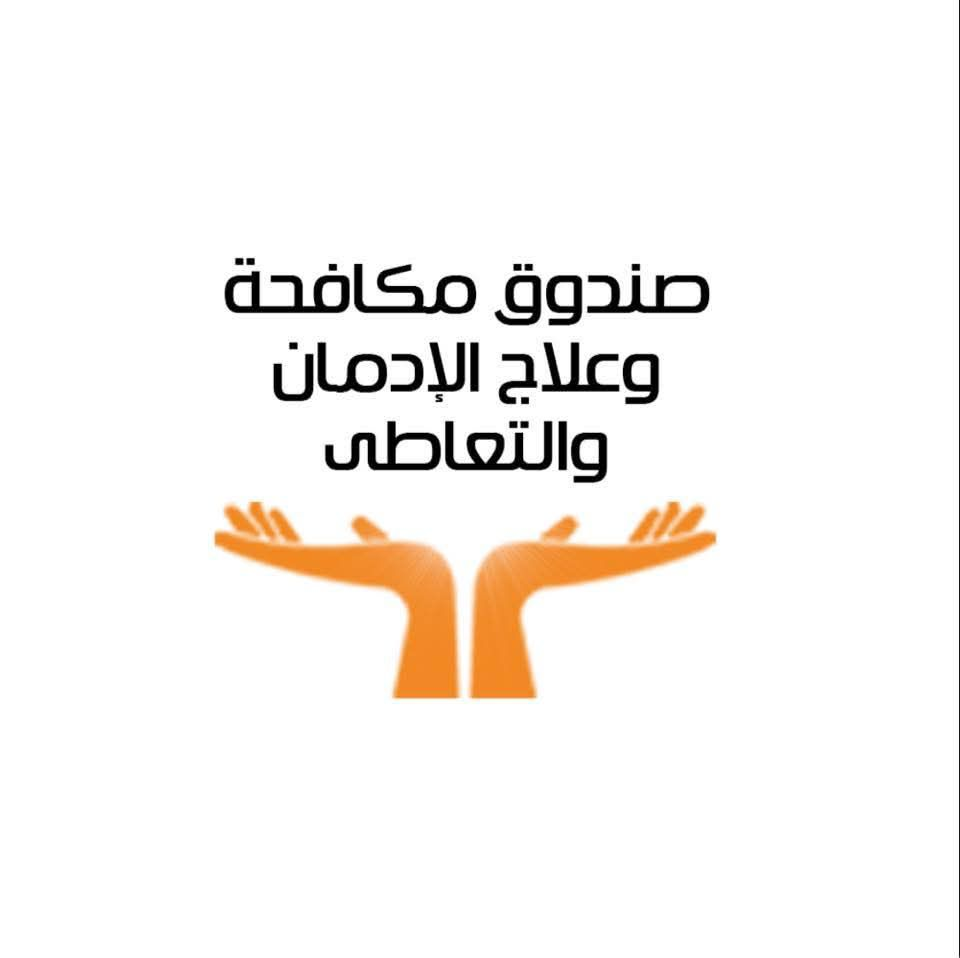
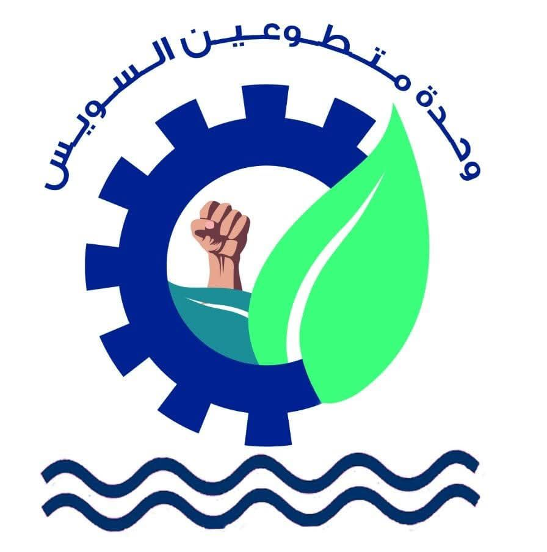

خدمات العلاج والمشورة والدعم النفسي مجانية وفي سرية تامة. اتصل بالخط الساخن 16023 أو زور العيادة الخارجية الرسمية.
اتصل بالخط الساخن 16023 موقع العيادةصندوق مكافحة وعلاج الإدمان التابع لرئاسة مجلس الوزراء يعمل على تنفيذ السياسات الوطنية للوقاية من المخدرات وتقديم العلاج المجاني للمتعاطين.
الحملات التوعوية تستهدف الشباب والأسر والطلاب في مختلف المحافظات لنشر الوعي بمخاطر المخدرات وتصحيح المفاهيم المغلوطة.
شبكة مراكز العزيمة المتخصصة تقدم الدعم النفسي وإعادة التأهيل والدمج المجتمعي للمتعافين.
📞 الخط الساخن 16023 – متاح 24 ساعة، العلاج مجاني وسري تماماً.
حققت الحملة أكثر من 7.5 مليون مشاهدة خلال 3 أيام، لتؤكد أن التعافي ممكن والبداية الجديدة دائماً متاحة.
أنت قادر تتغلب على الماضي وتبدأ من جديد 💪
أنت أقوى من المخدرات
العيادة الرسمية الوحيدة المعتمدة بمحافظة السويس للخط الساخن 16023.
الأحد والثلاثاء من 10 صباحاً حتى 2 ظهراً
تقييم الحالات – المشورة – متابعة العلاج – الدعم النفسي
المخدرات تساعد على التركيز.
المخدرات تضعف التركيز وتضر العقل والجسم.
لا توجد أعراض انسحاب للحشيش.
هناك أعراض انسحاب نفسية وإعتماد على المخدر، 50% من طالبي العلاج لديهم اعتمادية.
المخدرات تحسن الصحة النفسية.
الحشيش يسبب تقلب المزاج، الهلوسة والخلل في تقدير المسافات.
انضم إلينا وساعدنا في حملات التوعية ومساندة المتعافين.
انضم الآن